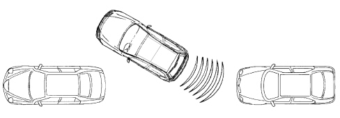
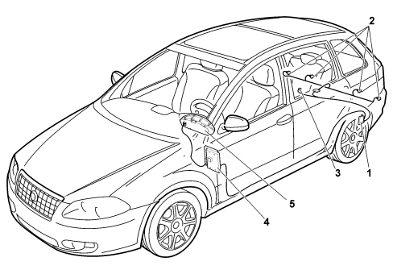
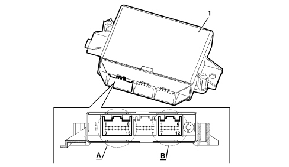
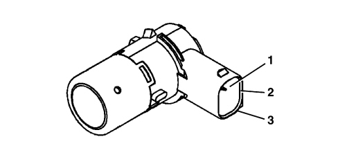
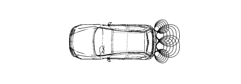

5580H PARKING OBSTACLE DETECTION DEVICE
- Path
- Descriptions > 55 ELECTRICAL EQUIPMENT > 5580 SPECIAL ACCESSORIES > 5580H PARKING OBSTACLE DETECTION DEVICE
- Kind
- system description
- Applies to
- all engines; all production periods
- Interactive page
- https://sloeber94.github.io/elrnDB-fCrm/en/#/194000194
Applies to: all engines; all production periods
Parking sensors system
The "Parking Assistance" system supplies the driver with information on distance when approaching obstacles behind the vehicle thereby providing help with parking manoeuvres and identifying obstacles that are outside the field of vision.
The information of the presence/distance of an obstacle is transmitted to the driver by means of acoustic warnings whose frequency depends on the distance of the obstacle.

COMPOSITION
The parking assistance system comprises the following components:

1 - Electronic control unit (NSP);
2- Ultrasound sensors;
3 - Trailer connection;
4 - Connection to CAN (Body Computer);
5 - Connection to CAN (Instrument Panel);
The buzzer on this version in inside the instrument panel.
Parking sensor node (nsp)
The NSP is an electronic component incorporated in the CAN that provides the driver with assistance during manoeuvres with reverse gear engaged by recognizing any dangerous obstacles.
The electronic control unit carries out the following functions:
- Activating the sensors
- Processing the signals received by the sensors
- Checking the operation of the sensors
- Activating the buzzer in the instrument panel
- Managing the fault diagnosis and test functions
The electronic control unit has a device that protects against voltage fluctuations and short circuits.
Pin out
The control unit and pin out is illustrated in the diagram below

1 - Electronic control unit.
A - CONNECTOR A
B - CONNECTOR B
CONNECTOR A (16-way)
Pin | Function |
|---|---|
1 | Ignition-operated power supply |
5 | Negative deactivation signal if tow hook is fitted |
7 | B-CAN A |
8 | Earth |
14 | B - CAN B |
CONNECTOR B (12-way)
Pin | Function |
|---|---|
1 | Sensor earth |
2 | Right rear inner sensor signal |
3 | Left rear inner sensor signal |
4 | Right rear outer sensor signal |
5 | Left rear outer sensor signal |
6 | Sensor positive |
Sensors
The sensors are incorporated in the rear bumper using special adaptors (covers). The sensors use ultrasound technology and act as intelligent transmitters/receivers with triangulation technology: allowing improved detection in critical situations or in the presence of small obstacles. The impulses emitted are reflected by any obstacles; the transducer receives an echo which is converted into a digital signal and sent to the electronic control unit.

The system covers the middle and side area of the rear of the vehicle.
In the case of an obstacle in the middle area, it is detected at distances of less than 150 cm for the entire width of the vehicle.
In the case of an obstacle in the side area, it is detected at distances of less than 0.6 m.
Operation
The sensor is an ultrasound transducer which acts as an intelligent transmitter and receiver of ultrasound impulse packages. Both the frequency and the voltage of the impulses are produced in the transducer.
The impulses emitted are reflected by any obstacles; the transducer therefore receives an echo which is amplified and converted into a digital signal, sent to the electronic control unit via the same line used for the transmission request.
Each sensor can also be operated as a receiver only, in order to be able to take a triangular measurement between two sensors. This technique allows better detection of small obstacles and in situations featuring critical reflection.
The sensors all have the same electrical and mechanical properties; the maximum detection distance for each sensor can be adjusted using software according to the location of the actual sensor.
Sensor pin out
Pin | Function |
|---|---|
1 | Sensor power supply |
2 | Sensor signal |
3 | Earth |
OPERATION
The operation is illustrated in diagrammatic form.

Measuring distance of obstacles
The electronic control unit controls the sensors which convert the control unit electrical signals into ultrasound signals at a rhythm which varies between 3 and 10 measuring processes per second.
The signal, reflected by any obstacles, is received by the sensor and amplified by it, converted into a digital signal and sent, in this format, to the electronic control unit.
The control unit compares the signal transmitted with the one rececived and, using suitable algorhythms, calculates the time elapsed between the issue of the signal and the reception of the echo. This information is translated into distance and the driver is notified by means of acoustic signals.
Self-diagnosis
The control unit carries out an autodiagnostic test when it is switched on. The sensors are diagnosed each time they are activated.
Recovery strategies
The sensors and the wiring are subject to continuous fault diagnosis during the operation of the system. A fault in only one sensor inhibits the operation of the entire system.
Activation and deactivation of the system
When the control unit is switched on (vehicle key-on and reverse gear engaged) an autodiagnostic test and a test on all the peripheral functions are carried out. The system is ready to use in under 0.5 seconds.
The measurement of the distance only takes place when the system is activated.
The system is activated when the following two conditions are verified:
- Key-ON
- Reverse gear engaged
When the system is activated the buzzer in the instrument panel sounds intermittently as a warning that the system is activated.
If obstacles are present, it signals the distance of the obstacle by means of impulses whose frequency increases as the vehicle gets closer to the obstacle.
If there is a problem with the system then a warning signal is emitted.
Obstacle distance signal
The sound from the buzzer warns the driver that the vehicle is approaching an obstacle. The sound lasts for 75 ms, whilst the pause between the sounds is directly proportional to the distance of the obstacle: impulses in quick succession indicate the presence of an obstacle that is very close. A continuous sound indicates that the obstacle is less than 30 cm away.
The sound cycle remains constant if the distance measured by the centre sensors remains unchanged, whilst if this situation occurs for the side sensors, the signal is interrupted after 3 seconds (to prevent signals in the case of manoeuvres alongside walls).
If there is a trailer then there is no signalling of rear obstacles.
Error signalling
Any faults/errors are signalled by means of the instrument panel and acoustically.
The acoustic signal stops after 3 seconds.
The occurrence of errors/faults whilst the system is activated is signalled immediately.